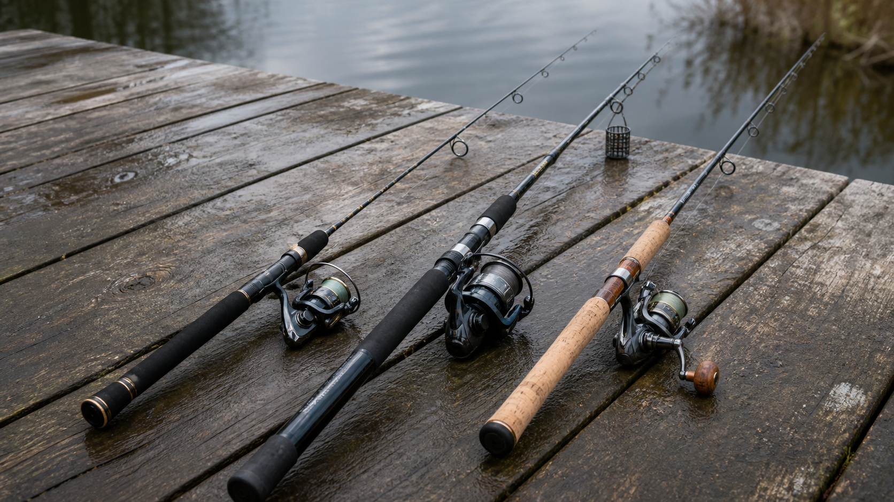
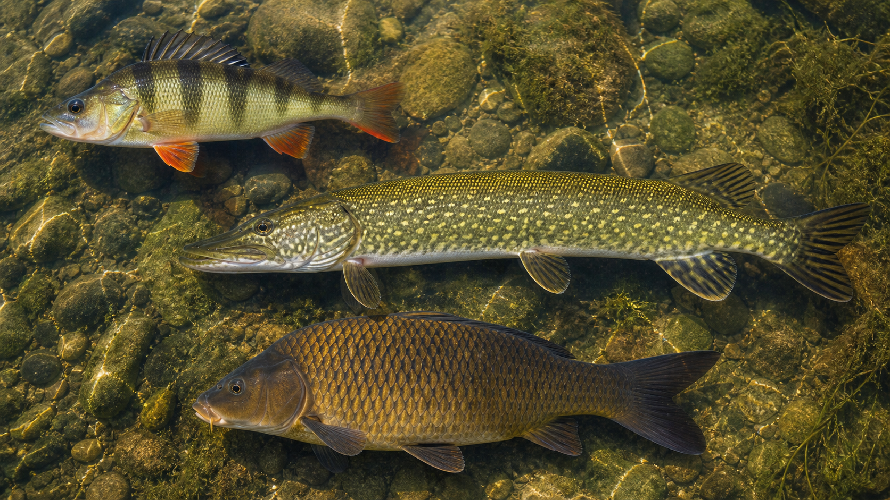
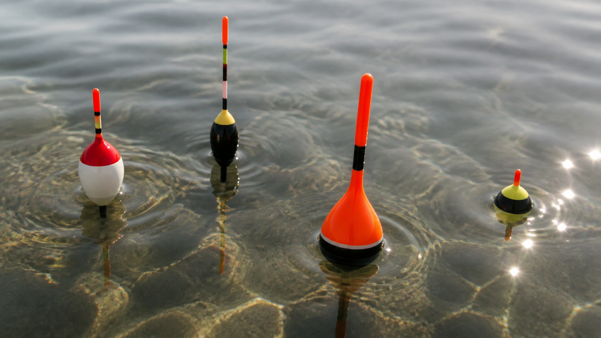

ГЛУБИНА И ЗАБРОС
НАТЯГ0.0 / 3 кг
Очистите рыбу ножом подходящего уровня и продайте добычу.



Найдите все виды в каждой редкости.
Очищенную рыбу можно выставить из садка. Покупатели сами повышают ставку, пока не истечёт время лота.
УЛОВ ДОСТАВЛЕНО НА БЕРЕГ